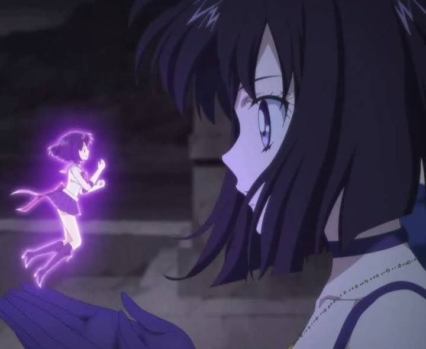

Si una característica comparten los personajes de anime es su peculiar personalidad. Y es que casi todas poseen un cabello fuera de lo común: ya sea azul, amarillo, verde, morado o rosa. Ciertamente, este último color es uno de los que más ha llamado la atención entre los entusiastas de este tipo de animación desde hace años, y precisamente es por ese motivo que el medio japonés Goo Ranking ha hecho una encuesta preguntándole a los fanáticos por sus waifus favoritas del anime con cabello rosa, ya que se a notado una preferencia por estos personajes.
Una pregunta habitual entre los legos en la materia es qué es el anime. Confundido a veces con el manga, una mala interpretación puede provocar la ira de sus más fervorosos fans, los otakus. ¡Desentrañar sus misterios! El anime o アニメ es un término con el que se identifica en general a la animación de procedencia japonesa. Hablamos de una industria muy potente, que fusiona el entretenimiento con la herencia cultural del país. Una de sus grandes virtudes es haber sabido seducir a públicos de cualquier gusto y edad. Toda generación guarda recuerdos de algún anime, pero internet lo ha impulsado aún más . Con los otakus como grandes embajadores, a día de hoy resulta un fenómeno global que influye en la música, el cine, la moda o los videojuegos.
Caracteristicas
Al estar dirigido a públicos diversos y abarcar un amplio rango de temas, puede ser complicado definirlo. Una de sus características principales es el desarrollo de tramas complejas a lo largo de muchos episodios. Así se diferenciaba de producciones occidentales, más orientadas al público infantil. Ha tratado temas como la relación con la naturaleza , el sentido colectivo del deber y hasta el existencialismo. Con un tono maduro, podían chocarnos algunas escenas de violencia o sexo.
Otra faceta reconocible es la de los rasgos de sus personajes. Es reconocible el tamaño de los ojos, en contraste desproporcionado con la nariz y la boca. Y aunque hace tiempo que se estandarizó el uso de computadoras, su estilo suele recordar al dibujo a mano del manga .